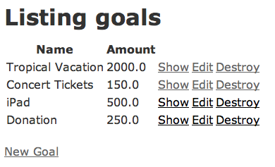
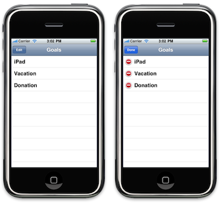
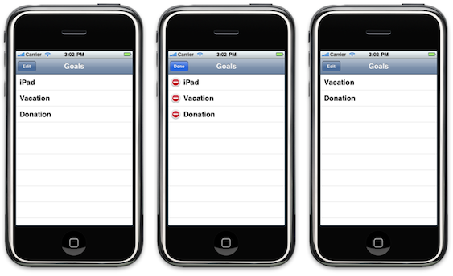
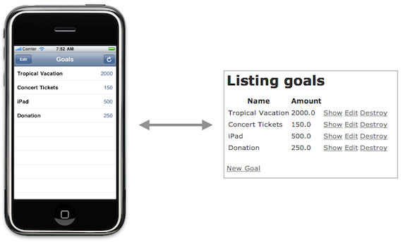
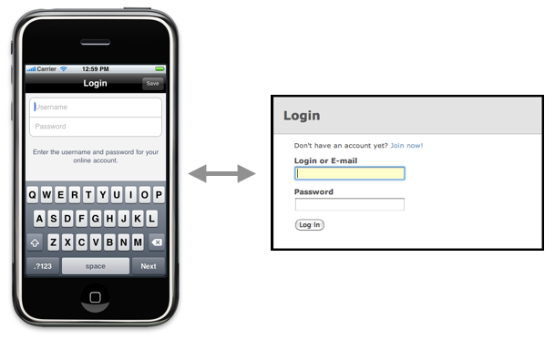
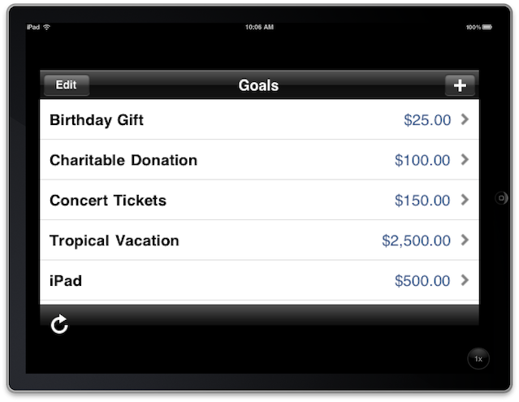

Mobile App Development with iPhone and Rails
Mike Clark
Contents
- Welcome!
- Getting Started: Rails App
- Getting Started: iPhone App
- Fetching Remote Goals
- Roll Your Own REST Library
- Asynchronous Networking
- Off-The-Shelf REST Library
- Nested Resources
- Authentication
- Caching and Syncing
- What About the iPad?
- Wrap Up
Welcome!
Copyright and Warranty
This workbook is Copyright © 2010 The Pragmatic Studio. Please don’t use it to create training courses or books without permission.
Sample code is provided for educational purposes only, and comes with absolutely no warranty.

How We’ll Build It
- Incrementally, with stopping off points
- Focusing on first principles
- Live coding at first, using existing code later
- At the end, you’ll know your options
- And you’ll understand how they work
Workbook Navigation
This is your workbook—follow along now, or work through it later.
- Next slide
- space bar, enter/return, right arrow, or down arrow
- Previous slide
- left arrow, up arrow
- Jump to slide number:
- Type slide number, then enter/return
- Toggle between slideshow and outline view:
- T
- Toggle controls:
- C
Getting Started: Rails App
Task: Scaffold App

1. Create the App
Generate a basic scaffold app:
$ rails saveup $ cd saveup $ rails g scaffold goal name:string amount:decimal
Run it:
$ rake db:migrate $ rails s
And create a goal or two…
Serialization
ActiveRecord models can serialize themselves as XML or JSON:
$ rails c >> print Goal.first.to_xml >> print Goal.first.to_json >> print Goal.all.to_xml >> print Goal.all.to_json
And resources can be serialized as XML over HTTP:
$ curl http://localhost:3000/goals.xml $ curl http://localhost:3000/goals/1.xml
2. Serialize resources as JSON
Add JSON handling to the respond_to blocks in the actions of the GoalsController:
def index
@goals = Goal.all
respond_to do |format|
format.html
format.xml { render :xml => @goals }
format.json { render :json => @goals }
end
endCopy in code/staged/goals_controller.rb for full JSON support
3. Try It!
Request the resource with a json format:
$ curl http://localhost:3000/goals.json $ curl http://localhost:3000/goals/1.json
Response should be a JSON record, or an array of records:
{
"id":1,
"name":"Tropical Vacation",
"amount":2000.0,
"created_at":"2010-05-13T18:20:49Z",
"updated_at":"2010-05-13T18:38:55Z"
}Getting Started: iPhone App
Task: Table-Based App

Steps
- Create an empty table-view app
- Use an array as the backing store for the table
- Populate the table with hard-coded goals
- Handle deleting goals
1. Create the App
- Create a new Navigation-based Application (without Core Data)
- name the project SaveUp
- Set the Active SDK to iPhone Simulator (3.1.3)
- Rename
RootViewControllertoGoalsViewController- use Xcode refactoring (
⇧ ⌘ J)
- use Xcode refactoring (
- Build and Run the app as a sanity check
- should see an empty table view
Table View Data Source Methods
How many sections in the table?
- (NSInteger)numberOfSectionsInTableView:(UITableView *)tableView;
How many rows per section?
- (NSInteger)tableView:(UITableView *)tableView numberOfRowsInSection:(NSInteger)section;
What’s the table cell for a given section/row pair?
- (UITableViewCell *)tableView:(UITableView *)tableView
cellForRowAtIndexPath:(NSIndexPath *)indexPath;2. Set Up Table Data
Add a goals instance variable and property to the .h file:
@interface GoalsViewController : UITableViewController {
NSMutableArray *goals;
}
@property (nonatomic, retain) NSArray *goals;
@end
Synthesize and dealloc it in the .m file:
@synthesize goals;
- (void)dealloc {
[goals release];
[super dealloc];
}
3. Hard-Code Some Goals
Change the viewDidLoad method to initialize the goals array:
- (void)viewDidLoad {
[super viewDidLoad];
self.title = @"Goals";
self.navigationItem.leftBarButtonItem = self.editButtonItem;
NSMutableArray *data = [[NSMutableArray alloc]
initWithObjects:@"iPad", @"Vacation", @"Donation", nil];
self.goals = data;
[data release];
}
4. Populate the Table Rows
Use the size of the goals array as the number of rows:
- (NSInteger)tableView:(UITableView *)tableView
numberOfRowsInSection:(NSInteger)section {
return [goals count];
}
Configure a row’s cell to contain the name of the goal at the given row:
NSString *goal = [goals objectAtIndex:indexPath.row];
cell.textLabel.text = goal;
5. Run It!

6. Handle Deleting Goals
Remove the deleted goal from the goals array:
- (void)tableView:(UITableView *)tableView
commitEditingStyle:(UITableViewCellEditingStyle)editingStyle
forRowAtIndexPath:(NSIndexPath *)indexPath {
[tableView beginUpdates];
if (editingStyle == UITableViewCellEditingStyleDelete) {
[goals removeObjectAtIndex:indexPath.row];
[tableView deleteRowsAtIndexPaths:[NSArray arrayWithObject:indexPath]
withRowAnimation:UITableViewRowAnimationFade];
}
[tableView endUpdates];
}
7. Delete a Goal

code/1-bootstrap
Fetching Remote Goals
Task: Populate Table from API

Steps
- Request the goals from the API as JSON
- Deserialize them into
Goalobjects - Refresh the table view
- Configure the table view cells
Simple GET request
NSURL *url = [NSURL URLWithString:@"http://localhost:3000/goals.json"];
NSError *error = nil;
NSString *jsonString =
[NSString stringWithContentsOfURL:url
encoding:NSUTF8StringEncoding
error:&error];
Synchronously reads data from the URL and creates a string, interpreted using the encoding.
Parsing JSON
- json-framework is a strict JSON parser and generator
- Drop-dead simple to use:
#import "SBJSON.h" NSError *error = nil; SBJSON *json = [[SBJSON alloc] init]; NSArray *results = [json objectWithString:aJsonString error:&error]; [json release];
- Returns an
NSDictionaryif the JSON string has one record - Returns an
NSArrayofNSDictionaryobjects if the JSON string has multiple records
1. Add the json-framework library
- Use Finder to locate the
code/staged/json-frameworkdirectory - Drag and drop it on the Classes group in the Groups & Files menu of your Xcode project
- Make sure to select the Copy items into destination group’s folder option
2. Create a Goal Class (.h)
Goal is a client-side representation of the Goal resource on the server:
@interface Goal : NSObject {
NSString *name;
NSString *amount;
NSString *goalId;
NSDate *createdAt;
NSDate *updatedAt;
}
@property (nonatomic, copy) NSString *name;
@property (nonatomic, copy) NSString *amount;
@property (nonatomic, copy) NSString *goalId;
@property (nonatomic, retain) NSDate *createdAt;
@property (nonatomic, retain) NSDate *updatedAt;
- (id)initWithDictionary:(NSDictionary *)dictionary;
+ (NSArray *)findAllRemote;
@end
2. Create a Goal Class (.m)
Don’t forget to synthesize and dealloc the properties:
#import "Goal.h"
#import "SBJSON.h"
@implementation Goal
@synthesize name;
@synthesize amount;
@synthesize goalId;
@synthesize createdAt;
@synthesize updatedAt;
- (void)dealloc {
[name release];
[amount release];
[goalId release];
[createdAt release];
[updatedAt release];
[super dealloc];
}
@end
3. Add a Goal Custom Initializer
We need to be able to create a Goal from a dictionary:
- (id)initWithDictionary:(NSDictionary *)dictionary {
if (self = [super init]) {
self.name = [dictionary valueForKey:@"name"];
self.amount = [NSString stringWithFormat:@"%@",
[dictionary valueForKey:@"amount"]];
self.goalId = [dictionary valueForKey:@"id"];
self.createdAt = [dictionary valueForKey:@"created_at"];
self.updatedAt = [dictionary valueForKey:@"updated_at"];
}
return self;
}
3. Add a Goal Finder Method
Send a GET request, parse the JSON response, and create Goal objects:
+ (NSArray *)findAllRemote {
NSURL *url = [NSURL URLWithString:@"http://localhost:3000/goals.json"];
NSError *error = nil;
NSString *jsonString =
[NSString stringWithContentsOfURL:url
encoding:NSUTF8StringEncoding
error:&error];
NSMutableArray *goals = [NSMutableArray array];
if (jsonString) {
SBJSON *json = [[SBJSON alloc] init];
NSArray *results = [json objectWithString:jsonString error:&error];
[json release];
for (NSDictionary *dictionary in results) {
Goal *goal = [[Goal alloc] initWithDictionary:dictionary];
[goals addObject:goal];
[goal release];
}
}
return goals;
}
4. Refresh the Table View
Add a refresh action that fetches the goals and reloads the table:
- (IBAction)refresh {
[UIApplication sharedApplication].networkActivityIndicatorVisible = YES;
self.goals = [Goal findAllRemote];
[self.tableView reloadData];
[UIApplication sharedApplication].networkActivityIndicatorVisible = NO;
}
Call refresh when the view is loaded:
- (void)viewDidLoad {
[super viewDidLoad];
self.title = @"Goals";
self.navigationItem.leftBarButtonItem = self.editButtonItem;
[self refresh];
}
5. Configure the Table Cells
Change each row to contain the respective goal’s name and amount:
Goal *goal = [goals objectAtIndex:indexPath.row];
cell.textLabel.text = goal.name;
cell.detailTextLabel.text = goal.amount;
6. Add a Refresh Button
The refresh button messages our refresh action:
- (void)viewDidLoad {
[super viewDidLoad];
self.title = @"Goals";
self.navigationItem.leftBarButtonItem = self.editButtonItem;
UIBarButtonItem *refreshButton = [[UIBarButtonItem alloc]
initWithBarButtonSystemItem:UIBarButtonSystemItemRefresh
target:self
action:@selector(refresh)];
self.navigationItem.rightBarButtonItem = refreshButton;
[refreshButton release];
[self refresh];
}
7. Run It!
- Add a goal (or two) in the Rails app
- Hit the Refresh button in the iPhone app
- The table view should reload with new goals
- What happens when you delete a goal on the iPhone, then refresh?
code/2-json
Roll Your Own REST Library
Task: CRUD a Resource

1. Level Up!
- Switch to the iPhone app in the
code/3-scaffolddirectory - Run it!
- It supports adding new goals locally and updating local goals
- But it doesn’t support creating, updating, and deleting remote goals
- Search for TODO to see why
Steps
- Write a custom REST library
- Change
Goalto include CRUD methods that delegate to the library - Update
GoalsViewControllerto delete a remote goal - Update
GoalAddViewControllerto create or update a remote goal
Synchronous Networking Basics
1. Create a request from a URL:
NSURL *url = [NSURL URLWithString:@"http://localhost:3000/goals.json"]; NSURLRequest *request = [NSURLRequest requestWithURL:url]; [request setHTTPMethod:@"GET"];
2. Send the request synchronously:
NSURLResponse *response = nil;
NSError *error = nil;
NSData *responseData =
[NSURLConnection sendSynchronousRequest:request returningResponse:&response error:&error];3. Handle the returned data:
NSString *responseString =
[[NSString alloc] initWithData:responseData encoding:NSUTF8StringEncoding]; Custom Resource Library
To support CRUD, we need four standard verbs:
#import <Foundation/Foundation.h>
@interface Resource : NSObject {
}
+ (NSString *)get:(NSString *)url;
+ (NSString *)post:(NSString *)body to:(NSString *)url;
+ (NSString *)put:(NSString *)body to:(NSString *)url;
+ (NSString *)delete:(NSString *)url;
@end
REST Verbs
Implementation can be generalized:
+ (NSString *)get:(NSString *)url {
return [self sendBy:@"GET" to:url withBody:nil];
}
+ (NSString *)post:(NSString *)body to:(NSString *)url {
return [self sendBy:@"POST" to:url withBody:body];
}
+ (NSString *)put:(NSString *)body to:(NSString *)url {
return [self sendBy:@"PUT" to:url withBody:body];
}
+ (NSString *)delete:(NSString *)url {
return [self sendBy:@"DELETE" to:url withBody:nil];
}
Synchronous Networking Revisted
+ (NSString *)sendBy:(NSString *)method to:(NSString *)url withBody:(NSString *)body {
NSMutableURLRequest *request =
[NSMutableURLRequest requestWithURL:[NSURL URLWithString:url]];
[request setHTTPMethod:method];
if (body) {
[request setHTTPBody:[body dataUsingEncoding:NSUTF8StringEncoding]];
[request setValue:@"application/json" forHTTPHeaderField:@"Content-Type"];
}
return [self sendRequest:request];
}
+ (NSString *)sendRequest:(NSMutableURLRequest *)request {
NSHTTPURLResponse *response;
NSError *error;
NSData *responseData =
[NSURLConnection sendSynchronousRequest:request
returningResponse:&response
error:&error];
NSString *responseString =
[[NSString alloc] initWithData:responseData
encoding:NSUTF8StringEncoding];
[responseString autorelease];
return responseString;
}
2. Change Goal (.h)
Define new CRUD methods:
@interface Goal : NSObject {
NSString *name;
NSString *amount;
NSString *goalId;
NSDate *createdAt;
NSDate *updatedAt;
}
@property (nonatomic, copy) NSString *name;
@property (nonatomic, copy) NSString *amount;
@property (nonatomic, copy) NSString *goalId;
@property (nonatomic, retain) NSDate *createdAt;
@property (nonatomic, retain) NSDate *updatedAt;
- (id)initWithDictionary:(NSDictionary *)dictionary;
+ (NSArray *)findAllRemote;
- (void)createRemote;
- (void)updateRemote;
- (void)saveRemote;
- (void)destroyRemote;
@end
3. Change Goal (.m)
Implement CRUD methods to delegate to our custom Resource class:
- (void)createRemote {
NSString *url =
[NSString stringWithFormat:@"%@/goals.json", siteURL];
[Resource post:[self params] to:url];
}
- (void)updateRemote {
NSString *url =
[NSString stringWithFormat:@"%@/goals/%@.json", siteURL, self.goalId];
[Resource put:[self params] to:url];
}
- (void)saveRemote {
if (self.goalId == nil) {
[self createRemote];
} else {
[self updateRemote];
}
}
- (void)destroyRemote {
NSString *url =
[NSString stringWithFormat:@"%@/goals/%@.json", siteURL, self.goalId];
[Resource delete:url];
}
4. Find the TODOs
- (void)tableView:(UITableView *)tableView
commitEditingStyle:(UITableViewCellEditingStyle)editingStyle
forRowAtIndexPath:(NSIndexPath *)indexPath {
[tableView beginUpdates];
if (editingStyle == UITableViewCellEditingStyleDelete) {
Goal *goal = [goals objectAtIndex:indexPath.row];
// TODO: destroy remote goal
[goals removeObjectAtIndex:indexPath.row];
[tableView deleteRowsAtIndexPaths:[NSArray arrayWithObject:indexPath]
withRowAnimation:UITableViewRowAnimationFade];
}
[tableView endUpdates];
}
-(IBAction)save {
goal.name = nameField.text;
goal.amount = amountField.text;
// TODO: create or update remote goal
[self.delegate didChangeGoal:goal];
[self.navigationController popViewControllerAnimated:YES];
}
5. Fix the TODOs
- (void)tableView:(UITableView *)tableView
commitEditingStyle:(UITableViewCellEditingStyle)editingStyle
forRowAtIndexPath:(NSIndexPath *)indexPath {
[tableView beginUpdates];
if (editingStyle == UITableViewCellEditingStyleDelete) {
Goal *goal = [goals objectAtIndex:indexPath.row];
[goal destroyRemote];
[goals removeObjectAtIndex:indexPath.row];
[tableView deleteRowsAtIndexPaths:[NSArray arrayWithObject:indexPath]
withRowAnimation:UITableViewRowAnimationFade];
}
[tableView endUpdates];
}
-(IBAction)save {
goal.name = nameField.text;
goal.amount = amountField.text;
[goal saveRemote];
[self.delegate didChangeGoal:goal];
[self.navigationController popViewControllerAnimated:YES];
}
6. Run It
- Open the Xcode console (
⇧ ⌘ R) - Create a goal
- Edit a goal
- Delete a goal
- See GET, POST, PUT, and DELETE requests in the console?
- Is everything in sync with the Rails app?
code/4-crud
Are We Done?!
- We have full REST interaction, but…
- No error handling
- No authentication support
- Every request is synchronous
- Answer: No!
Asynchronous Networking
Remember the Synchronous Way?
1. Create a request from a URL:
NSURL *url = [NSURL URLWithString:@"http://localhost:3000/goals.json"]; NSURLRequest *request = [NSURLRequest requestWithURL:url];
2. Send the request synchronously:
NSURLResponse *response = nil;
NSError *error = nil;
NSData *responseData =
[NSURLConnection sendSynchronousRequest:request returningResponse:&response error:&error];3. Handle the returned data:
NSString *responseString =
[[NSString alloc] initWithData:responseData encoding:NSUTF8StringEncoding]; Forget the Synchronous Way!
- Synchronous requests block the iPhone UI’s main thread
- This is very bad!
- It may feel like your app has crashed or frozen
- Users will curse you
Asynchronous Networking
1. Create a request from a URL:
NSURL *url = [NSURL URLWithString:@"http://localhost:3000/goals.json"]; NSURLRequest *request = [NSURLRequest requestWithURL:url];
2. Send the request asynchronously, with a delegate:
NSURLConnection *connection =
[[NSURLConnection alloc] initWithRequest:request delegate:self];Asynchronous Networking
3. Handle the returned data in a delegate method:
- (void)connection:(NSURLConnection *)connection
didReceiveData:(NSData *)data {
if (receivedData == nil) {
receivedData = [[NSMutableData alloc] init];
}
[receivedData appendData:data];
}
- (void)connectionDidFinishLoading:(NSURLConnection *)connection {
// do something with receivedData
}
- (void)connection:(NSURLConnection *)connection
didFailWithError:(NSError *)error {
// handle error
}Operation Queues
NSURLConnectioncan run a network request asynchronously- But what about other work you might want to run in the background?
- Concurrent programming is hard
- Operation queues make it easy to manage background tasks
Using Operation Queues
1. Write a method you want to run asynchronously:
- (void)doWork:(NSObject *)anArgument {
// do some work
}2. Wrap the method in an NSInvocationOperation:
NSInvocationOperation *operation = [[NSInvocationOperation alloc]
initWithTarget:self selector:@selector(doWork:) object:anArgument];3. Add it to an NSOperationQueue:
NSOperationQueue *queue = [[NSOperationQueue alloc] init]; [queue addOperation:operation]; [operation release];
Respect the Main Thread
- The main thread encompasses the app’s main run loop
- Always update the UI on the main thread
- Contrived example of a method running in a separate thread:
- (void)doWork:(NSObject *)anArgument {
[self.tableView performSelectorOnMainThread:@selector(reloadData)
withObject:nil
waitUntilDone:NO];
[self.navigationController
performSelectorOnMainThread:@selector(popViewControllerAnimated:)
withObject:[NSNumber numberWithBool:YES]
waitUntilDone:NO];
[self performSelectorOnMainThread:@selector(deleteRowsAtIndexPaths:)
withObject:[NSArray arrayWithObject:indexPath]
waitUntilDone:NO];
} Off-The-Shelf REST Library
Task: CRUD a Remote Resource
Same UI, but with
- Full REST support
- Asynchronous networking
- Better error handling
- Basic authentication
Task: CRUD a Remote Resource

HTTPRiot
HTTPRiot Configuration
Base URL where your resources live:
[HRRestModel setBaseURL:[NSURL URLWithString:@"http://your-server"]];
Delegate object that handles responses:
[HRRestModel setDelegate:anObject];
Optional bits:
[HRRestModel setFormat:HRDataFormatXML]; // JSON by default [HRRestModel setBasicAuthWithUsername:@"mike" password:@"secret"];
Sending REST Requests
[HRRestModel getPath:@"/goals" withOptions:nil object:nil];
NSDictionary *params = [NSDictionary dictionaryWithObject:
[newGoal JSONRepresentation] forKey:@"body"];
[HRRestModel postPath:@"/goals" withOptions:params object:nil];
NSDictionary *params = [NSDictionary dictionaryWithObject:
[updatedGoal JSONRepresentation] forKey:@"body"];
[HRRestModel putPath:@"/goals/3" withOptions:params object:nil];
[HRRestModel deletePath:@"/goals/3" withOptions:nil object:nil];
Delegate Methods: Success
Results delivered in a callback method implemented by the delegate:
- (void)restConnection:(NSURLConnection *)connection
didReturnResource:(id)resource
object:(id)object {
// resource is an array or dictionary
for (id item in resource) {
Goal *goal = [[Goal alloc] initWithDictionary:item];
}
}
- (void)restConnection:(NSURLConnection *)connection
didReceiveResponse:(NSHTTPURLResponse *)response
object:(id)object {
// If you're interested in handling response codes
}Delegate Methods: Failure
Delegate object should implement these methods, too:
- (void)restConnection:(NSURLConnection *)connection
didFailWithError:(NSError *)error
object:(id)object {
// Handle connection errors: failure to connect to server, etc.
}
- (void)restConnection:(NSURLConnection *)connection
didReceiveError:(NSError *)error
response:(NSHTTPURLResponse *)response
object:(id)object {
// Handle invalid responses: 404, 500, etc.
}
- (void)restConnection:(NSURLConnection *)connection
didReceiveParseError:(NSError *)error
responseBody:(NSString *)string {
// Request was successful, but couldn't parse the
// data returned by the server
}
1. Level Up!
- Switch to the iPhone app in the
code/5-httpriotdirectory - Create, edit, and delete a goal
- Search for
HRRestModelto see how it works - Better yet, let’s do some spelunking with the debugger…
2. Fetch Goals Asynchronously
Set a breakpoint in the refresh action of GoalsViewController.m:
- (IBAction)refresh {
[UIApplication sharedApplication].networkActivityIndicatorVisible = YES;
[HRRestModel setDelegate:self];
[HRRestModel getPath:@"/goals" withOptions:nil object:nil];
}
3. Handle the Response
Set another breakpoint in the delegate method:
- (void)restConnection:(NSURLConnection *)connection
didReturnResource:(id)resource
object:(id)object {
NSMutableArray *remoteGoals = [[NSMutableArray alloc] init];
for (NSDictionary *dictionary in resource) {
Goal *remoteGoal = [[Goal alloc] initWithDictionary:dictionary];
[remoteGoals addObject:remoteGoal];
[remoteGoal release];
}
self.goals = remoteGoals;
[remoteGoals release];
[self.tableView reloadData];
[UIApplication sharedApplication].networkActivityIndicatorVisible = NO;
}
4. Debug
- Build and Debug the app
- Which thread is the
refreshmethod running in? - Which thread is the
restConnection:didReturnResource:object:method running in? - How would you verify that it’s asynchronous?
5. Save Goals Asynchronously
Set a breakpoint in the save action of GoalAddViewController.m:
-(IBAction)save {
goal.name = nameField.text;
goal.amount = amountField.text;
[UIApplication sharedApplication].networkActivityIndicatorVisible = YES;
NSDictionary *options =
[NSDictionary dictionaryWithObject:[goal JSONRepresentation] forKey:@"body"];
if (goal.goalId == nil) {
[HRRestModel postPath:@"goals" withOptions:options object:nil];
} else {
[HRRestModel putPath:[NSString stringWithFormat:@"goals/%@", goal.goalId]
withOptions:options object:nil];
}
}
6. Handle Saving Goals
Set another breakpoint in the delegate method:
- (void)restConnection:(NSURLConnection *)connection
didReturnResource:(id)resource
object:(id)object {
Goal *remoteGoal = [[Goal alloc] initWithDictionary:resource];
[self.delegate didChangeGoal:remoteGoal];
[remoteGoal release];
[UIApplication sharedApplication].networkActivityIndicatorVisible = NO;
[self.navigationController popViewControllerAnimated:YES];
}
Run it, and use the debugger to fully understand how it works.
Building the HTTPRiot SDK
1. Download, build, and install it:
$ git clone http://github.com/Caged/httpriot.git $ cd httpriot $ mkdir pkg $ gem install versionomy $ rake sdk:dist $ rake sdk:install
Building the HTTPRiot SDK
2. Set the Additional SDKs build setting to:
~/Library/SDKs/httpriot-0.6.10/$(PLATFORM_NAME)$(IPHONEOS_DEPLOYMENT_TARGET).sdk
3. Set the Other Linker Flags build setting to:
-lhttpriot -lxml2 -ObjC -all_load
4. Set the Header Search Paths build setting to:
/Developer/Platforms/iPhoneOS.platform/Developer/SDKs/iPhoneOS3.2.sdk/usr/include/libxml2
ASIHTTPRequest
- ASIHTTPRequest is a flexible, low-level library with tons of features
- File uploads, post form-encoded data, basic authentication, progress indictors, etc.
- Synchronous and asynchronous requests
- Not necessarily a REST library
- Doesn’t automatically convert JSON and XML
- Highly recommended, though
ASIHTTPRequest Example
- (void)get {
NSURL *url = [NSURL URLWithString:@"http://your-server.com/goals.json"];
ASIHTTPRequest *request = [ASIHTTPRequest requestWithURL:url];
[request setDelegate:self];
[request startAsynchronous];
}
- (void)post:(NSString *postDataString) {
NSURL *url = [NSURL URLWithString:@"http://your-server.com/goals.json"];
ASIHTTPRequest *request = [ASIHTTPRequest requestWithURL:url];
[request setRequestMethod:@"POST"];
[request appendPostData:[postDataString dataUsingEncoding:NSUTF8StringEncoding]];
[request setDelegate:self];
[request startAsynchronous];
}
- (void)requestFinished:(ASIHTTPRequest *)request {
NSString *response = [request responseString];
}
- (void)requestFailed:(ASIHTTPRequest *)request {
NSError *error = [request error];
}Nested Resources
Task: Goals and Credits

ObjectiveResource
- ObjectiveResource is an Objective-C port of ActiveResource
- Automatically serializes/deserializes objects (to/from JSON or XML)
- Assumes Rails’ RESTful conventions
- Supports nested resources
- Synchronous, but with asynchronous option
Remote Resource (.h)
Remote methods added to NSObject:
#import "ObjectiveResource.h"
@interface Goal : NSObject {
NSString *name;
NSString *amount;
NSString *goalId;
NSDate *createdAt;
NSDate *updatedAt;
}
@property (nonatomic, copy) NSString *name;
@property (nonatomic, copy) NSString *amount;
@property (nonatomic, copy) NSString *goalId;
@property (nonatomic, retain) NSDate *createdAt;
@property (nonatomic, retain) NSDate *updatedAt;
@endRemote Resource (.m)
Nothing special here:
#import "Goal.h"
@implementation Goal
@synthesize name;
@synthesize amount;
@synthesize goalId;
@synthesize createdAt;
@synthesize updatedAt;
- (void)dealloc {
[name release];
[amount release];
[goalId release];
[createdAt release];
[updatedAt release];
[super dealloc];
}
@endConfiguration
#import "ObjectiveResource.h" [ObjectiveResourceConfig setSite:@"http://your-server/"]; [ObjectiveResourceConfig setResponseType:JSONResponse];
Remote CRUD Operations
NSArray *goals = [Goal findAllRemote];
Goal *goal = [[Goal alloc] init]; goal.name = @"Tropical Vacation"; [goal createRemote];
Goal *goal = [Goal findRemote:@"3"]; goal.name = @"Donation"; [goal updateRemote];
[goal destroyRemote];
1. Switcheroo
- Switch back to the iPhone app in the
code/4-cruddirectory- This version uses our custom
Resourceclass
- This version uses our custom
- Copy it to a new directory so you don’t overwrite the original
2. Add the objectiveresource library
- Use Finder to locate the
code/staged/objectiveresourcedirectory - Drag and drop it on the Classes group in the Groups & Files menu of your Xcode project
- Make sure to select the Copy items into destination group’s folder option
- Delete the
json-frameworkdirectory - Build as a sanity check
3. Clean House
- Import ObjectiveResource in
Goal.h:
#import "ObjectiveResource.h"
- Remove all the custom CRUD methods in
Goal
- Delete the
Resourceclass
4. Configure ObjectiveResource
In SaveUpAppDelegate.m, add an import:
#import "ObjectiveResourceConfig.h"
And configure ObjectiveResource in application:didFinishLaunchingWithOptions::
[ObjectiveResourceConfig setSite:@"http://localhost:3000/"]; [ObjectiveResourceConfig setResponseType:JSONResponse];
5. Tweak Rails
Add an initializer that includes:
ActiveRecord::Base.include_root_in_json = true
ObjectiveResource expects JSON responses to include the resource name
6. Run It!
- Create, edit, and delete a goal
- Watch the Rails log
- Is everything in sync with the Rails app?
- No visible app changes
- Less code to maintain
- But it’s synchronous…
code/6-objectiveresource
What We Have
Asynchronous Way
- 1.1 branch has a
ConnectionManagersingleton - It encapsulates an operation queue
- We understand how it works:
- (void)runJob:(SEL)selector
onTarget:(id)target
withArgument:(id)argument {
NSInvocationOperation *operation = [[NSInvocationOperation alloc]
initWithTarget:target selector:selector object:argument];
[operationQueue addOperation:operation];
[operation release];
}7. Send requests in background
For example, change refresh from:
- (IBAction)refresh {
[UIApplication sharedApplication].networkActivityIndicatorVisible = YES;
self.goals = [Goal findAllRemote];
[self.tableView reloadData];
[UIApplication sharedApplication].networkActivityIndicatorVisible = NO;
}To run a background job instead:
- (IBAction)refresh {
[UIApplication sharedApplication].networkActivityIndicatorVisible = YES;
[[ConnectionManager sharedInstance] runJob:@selector(fetchRemoteGoals)
onTarget:self];
}8. Handle response async
Write the method that runs on a separate thread:
- (void)fetchRemoteGoals {
self.goals = [Goal findAllRemote];
[self.tableView performSelectorOnMainThread:@selector(reloadData)
withObject:nil
waitUntilDone:NO];
[UIApplication sharedApplication].networkActivityIndicatorVisible = NO;
}But We Still Want This
9. Switcheroo
- Switch to the final Rails app in the
code/rails_appdirectory- This version has
GoalandCreditresources (nested)
- This version has
- Migrate the database and run it
- Create an account and log in
- Switch to the final iPhone app in the
code/iphone_appdirectory- This version supports nested resources, asynchronous networking, and authentication
- Run it!
Nested Resource Routes
The Rails app has a nested Credit resource:
Saveup::Application.routes.draw do |map|
resources :goals do
resources :credits
end
end
Credits Controller
Credits are always accessed via a goal:
class CreditsController < ApplicationController
before_filter :find_goal
def show
@credit = @goal.credits.find(params[:id])
respond_to do |format|
format.html
format.xml { render :xml => @credit }
format.json { render :json => @credit }
end
end
protected
def find_goal
@goal = current_user.goals.find(params[:goal_id])
rescue ActiveRecord::RecordNotFound
flash[:error] = "Invalid goal."
redirect_to @goal
end
end
iPhone Credit Model (.h)
Credit holds its respective Goal id:
#import "ObjectiveResource.h"
@interface Credit : NSObject {
NSString *creditId;
NSString *goalId;
NSString *name;
NSString *amount;
NSDate *updatedAt;
NSDate *createdAt;
}
@property (nonatomic, copy) NSString *creditId;
@property (nonatomic, copy) NSString *goalId;
@property (nonatomic, copy) NSString *name;
@property (nonatomic, copy) NSString *amount;
@property (nonatomic, retain) NSDate *updatedAt;
@property (nonatomic, retain) NSDate *createdAt;
@end
iPhone Credit Model (.h)
Credit must override some methods to be nested:
@implementation Credit
@synthesize creditId;
@synthesize goalId;
+ (NSString *)getRemoteCollectionName {
return @"goals";
}
- (NSString *)nestedPath {
NSString *path = [NSString stringWithFormat:@"%@/credits", goalId];
if (creditId) {
path = [path stringByAppendingFormat:@"/%@", creditId];
}
return path;
}
- (BOOL)createRemoteWithResponse:(NSError **)aError {
return [self createRemoteAtPath:[[self class] getRemoteElementPath:[self nestedPath]]
withResponse:aError];
}
- (BOOL)updateRemoteWithResponse:(NSError **)aError {
return [self updateRemoteAtPath:[[self class] getRemoteElementPath:[self nestedPath]]
withResponse:aError];
}
- (BOOL)destroyRemoteWithResponse:(NSError **)aError {
return [self destroyRemoteAtPath:[[self class] getRemoteElementPath:[self nestedPath]]
withResponse:aError];
}
@end
Associating Goals and Credits
On the iPhone side, Goal can find its remote credits:
@implementation Goal
- (NSArray *)findAllRemoteCredits {
return [Credit findRemote:[NSString stringWithFormat:@"%@/%@",
goalId, @"credits"]];
}
@end
What We Have
Authentication
Task: Remote Authentication

Rails Authentication
Controller needs to scope goals to the current user:
class GoalsController < ApplicationController
before_filter :login_required
def index
@goals = current_user.goals.all
respond_to do |format|
format.html
format.xml { render :xml => @goals }
format.json { render :json => @goals }
end
end
end
Rails Authentication
Filter challenges with HTTP basic authentication:
def login_required
return if logged_in?
respond_to do |format|
format.html do
save_location
redirect_to login_url
end
format.any(:json, :xml) do
unless login_from_basic_auth
request_http_basic_authentication
end
end
end
end
ObjectiveResource Configuration
ObjectiveResource will automatically respond to authentication challenges:
[ObjectiveResourceConfig setSite:@"http://your-server/"]; [ObjectiveResourceConfig setResponseType:JSONResponse]; [ObjectiveResourceConfig setUser:@"mike"]; [ObjectiveResourceConfig setPassword:@"secret"];
Where Do You Store Credentials?
Always store credentials in the iPhone keychain:
- (void)saveCredentialsToKeychain {
NSURLCredential *credentials =
[NSURLCredential credentialWithUser:self.login
password:self.password
persistence:NSURLCredentialPersistencePermanent];
[[NSURLCredentialStorage sharedCredentialStorage]
setCredential:credentials forProtectionSpace:[self protectionSpace]];
}
How Do You Authenticate?
Try to create a remote Session (it’s a resource):
- (BOOL)authenticate:(NSError **)error {
if (![self hasCredentials]) {
return NO;
}
Session *session = [[[Session alloc] init] autorelease];
session.login = self.login;
session.password = self.password;
return [session createRemoteWithResponse:error];
}
Logging In
When the app launches, authenticate or show the login view:
- (void)login {
if ([self.user hasCredentials]) {
NSError *error = nil;
BOOL authenticated = [self.user authenticate:&error];
if (authenticated == NO) {
[AppHelpers handleRemoteError:error];
[self showAuthentication:self.user];
}
} else {
[self showAuthentication:self.user];
}
}
Important Security Tip
Be careful what you serialize by default from Rails:
class User < ActiveRecord::Base
def to_xml(options={})
default_serialization_options(options)
super(options)
end
def to_json(options={})
default_serialization_options(options)
super(options)
end
def default_serialization_options(options={})
options[:only] = [:username, :user_id, :updated_at, :created_at]
end
end
Caching and Syncing
The Problem
Cache expiration is notoriously challenging
Simplest Possible Solution
If you have a network connection:
- When the app launches, assume the local data store is dirty
- Blow away all the local data
- Reload the local data using the remote API
If you don’t have a network connection:
- Local data is quickly accessible, but read-only
Ideal Solution
Keep local and remote objects in sync:
- Populate a local Core Data store initially with data from the remote API
- Keep local objects updated with remote changes
- Keep remote objects updated with local changes
ObjectiveSync
- ObjectiveSync syncs all CRUD modifications between the client and server
- Built on top of SQLite Persistent Objects (not Core Data)
- Supports basic syncing with a single entity (no associations)
- Still on the drawing board
RestfulCoreData
- RestfulCoreData is a work in progress by Luke Redpath
- Read Synching web services with Core Data for background
- Currently supports basic syncing with a single entity (no associations yet)
- Uses HTTPRiot under the hood
- He’s looking for community involvement with this project
CoreResource
- CoreResource automatically stores serialized resources locally using Core Data with object relationships intact
- Uses ASIHTTPRequest under the hood
Additional Reading
What About the iPad?
2x

It’s Not Just a Big iPod Touch
- The iPad is a big iPod Touch
- It’s not just a big iPod Touch
- The UI experience is special on iPad
- This app would need to be redesigned for it
- But the networking parts don’t change!
Wrap Up
Now What?
- You now understand how these libraries work
- Choose what works best for your app
- Go make something cool already
- Have fun!
Books and Screencasts
- iPhone SDK Development
- Cocoa Programming
- iPad Programming
- Coding in Objective-C 2.0
- Becoming Productive in Xcode

RailsConf2010-8943